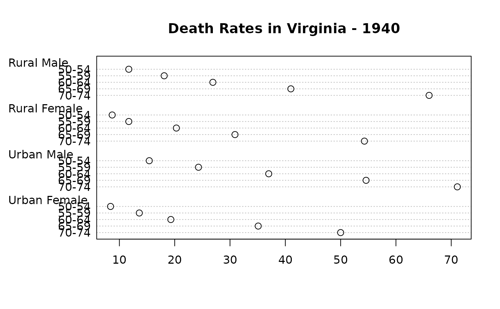
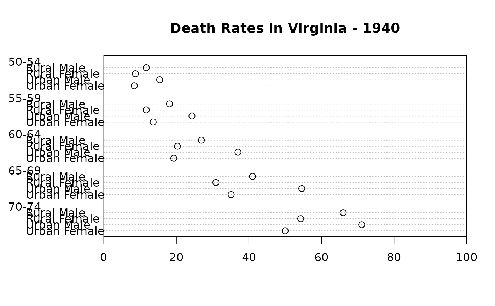
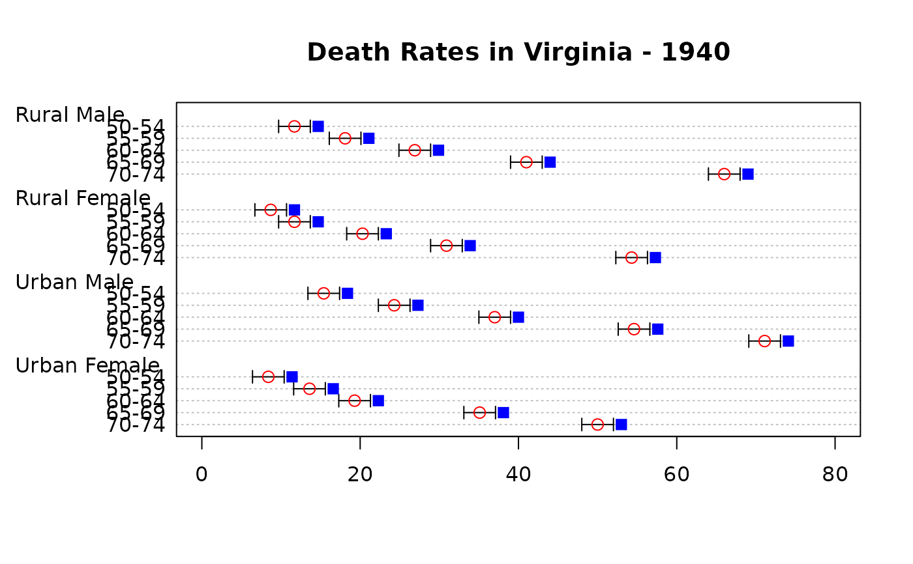
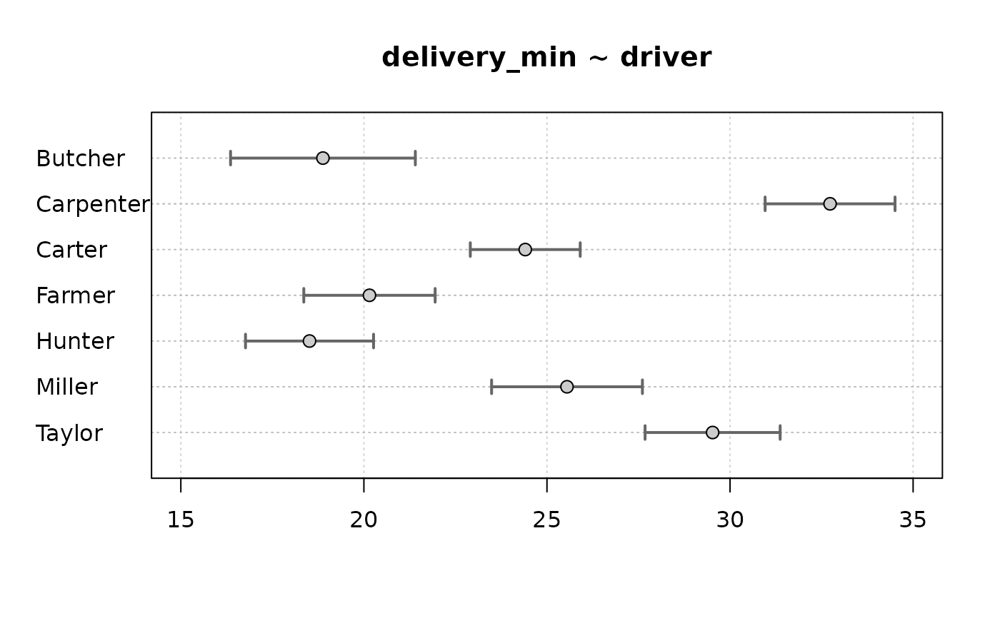
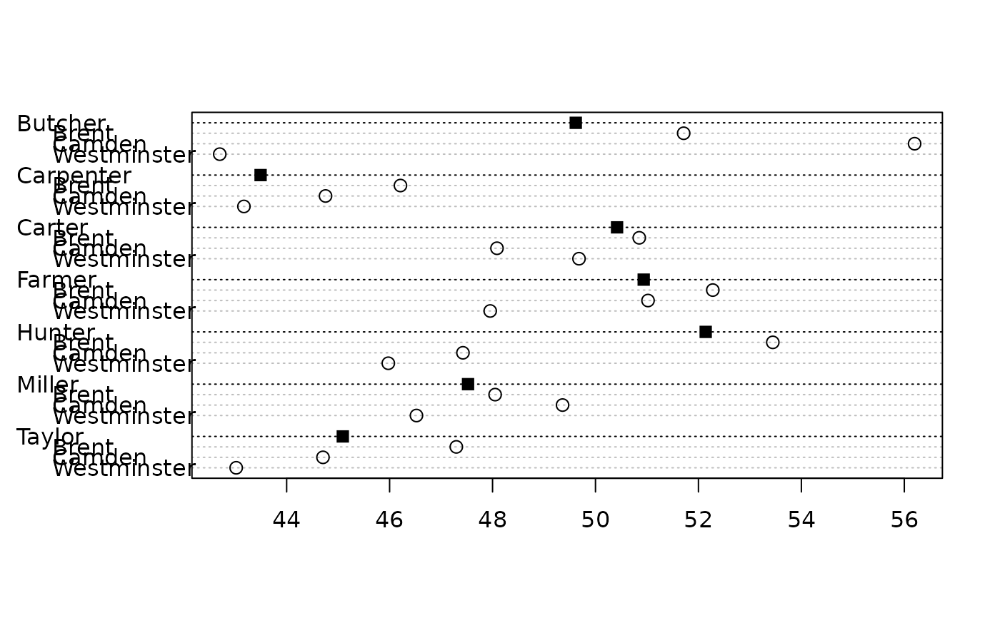
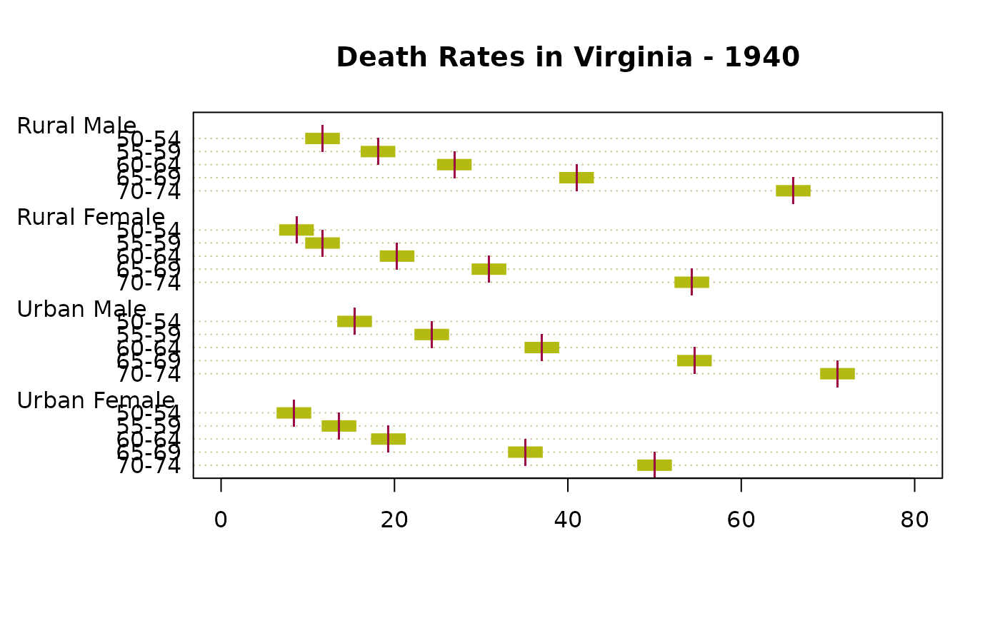
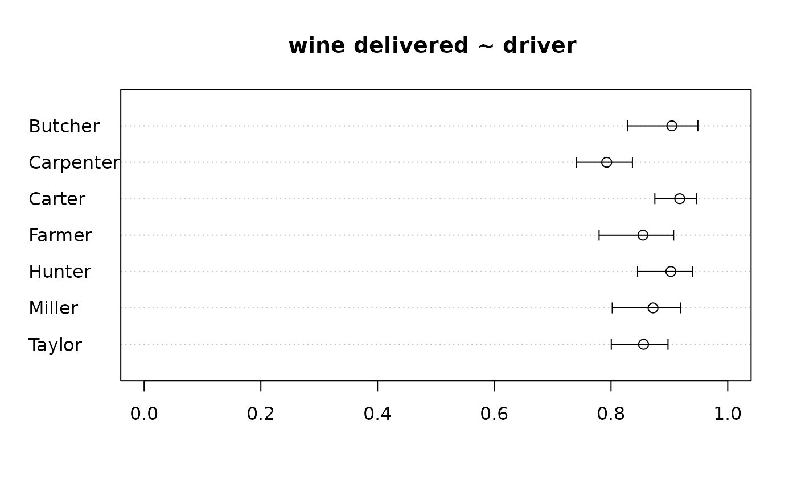
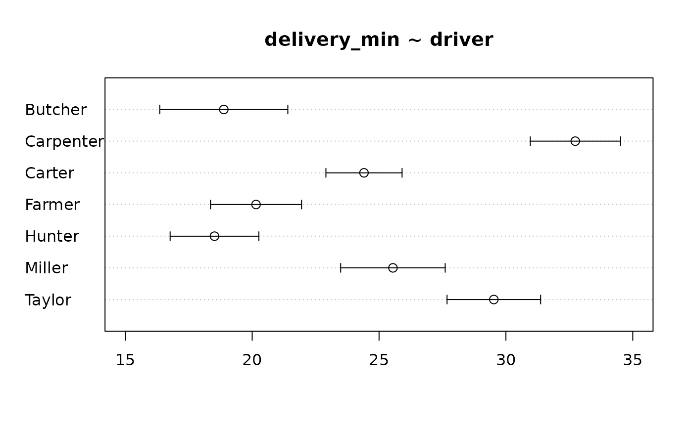
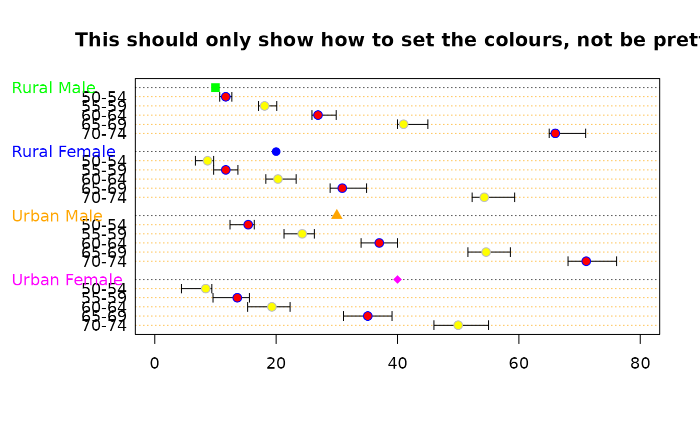

PlotDot.RdDraw a Cleveland dot plot. This is an extended version of dotchart with an added option for error bars and an add argument.
PlotDot(x, labels = NULL, groups = NULL, gdata = NULL, cex = par("cex"), pch = 21, gpch = 21, bg = par("bg"), color = par("fg"), gcolor = par("fg"), lcolor = "gray", lblcolor = par("fg"), xlim = NULL, main = NULL, xlab = NULL, ylab = NULL, xaxt=NULL, yaxt=NULL, add = FALSE, args.errbars = NULL, cex.axis = par("cex.axis"), cex.pch = 1.2, ...)
| x | either a vector or matrix of numeric values ( |
|---|---|
| labels | a vector of labels for each point.
For vectors the default is to use |
| groups | an optional factor indicating how the elements of
|
| gdata | data values for the groups. This is typically a summary such as the median or mean of each group. |
| cex | the character size to be used. Setting |
| pch | the plotting character or symbol to be used. Default is 21. |
| gpch | the plotting character or symbol to be used for group values. |
| bg | the background color of plotting characters or symbols to be
used; use |
| color | the color(s) to be used for points and labels. |
| gcolor | the single color to be used for group labels and values. |
| lcolor | the color(s) to be used for the horizontal lines. |
| lblcolor | the color(s) to be used for labels. |
| xlim | horizontal range for the plot, see
|
| main | overall title for the plot, see |
| xlab, ylab | axis annotations as in |
| xaxt | a character which specifies the x axis type. Specifying |
| yaxt | a character which specifies the y axis type. Specifying |
| add | logical specifying if bars should be added to an already existing plot; defaults to |
| args.errbars | optional arguments for adding error bars. All arguments for |
| cex.axis | The magnification to be used for axis annotation relative to the current setting of cex. |
| cex.pch | The magnification to be used for plot symbols relative to the current setting of cex. |
| ... | graphical parameters can also be specified as arguments. |
This function is invoked for its side effect, which is to produce two variants of dotplots as described in Cleveland (1985).
Dot plots are a reasonable substitute for bar plots.
Return the y-values used for plotting.
Becker, R. A., Chambers, J. M. and Wilks, A. R. (1988) The New S Language. Wadsworth & Brooks/Cole.
Cleveland, W. S. (1985) The Elements of Graphing Data. Monterey, CA: Wadsworth.
Murrell, P. (2005) R Graphics. Chapman & Hall/CRC Press.
PlotDot(VADeaths, main = "Death Rates in Virginia - 1940")op <- par(xaxs = "i") # 0 -- 100% PlotDot(t(VADeaths), xlim = c(0,100), main = "Death Rates in Virginia - 1940")par(op) # add some error bars PlotDot(VADeaths, main="Death Rates in Virginia - 1940", col="red", pch=21, args.errbars = list(from=VADeaths-2, to=VADeaths+2, mid=VADeaths, cex=1.4))# add some other values PlotDot(VADeaths+3, pch=15, col="blue", add=TRUE, labels=NA)# same as PlotDotCI xci <- do.call(rbind, tapply( d.pizza$delivery_min, d.pizza$driver, MeanCI, conf.level=0.99, na.rm=TRUE)) PlotDot(xci[,1], main="delivery_min ~ driver", pch=21, bg="grey80", col="black", args.errbars = list(from=xci[,2], to=xci[,3], mid=xci[,1], lwd=2, col="grey40", cex=1.5), xlim=c(15,35), panel.before=grid())# with group data x <- with(d.pizza, tapply(temperature, list(area, driver), mean, na.rm=TRUE)) PlotDot(x, gdata = tapply(d.pizza$temperature, d.pizza$driver, mean, na.rm=TRUE), gpch = 15)# special format par(lend=1) PlotDot(VADeaths, main="Death Rates in Virginia - 1940", pch="|", lcolor = hecru, col=hred, args.errbars = list(from=VADeaths-2, to=VADeaths+2, mid=VADeaths, cex=1.3, lwd=8, code=0, col=hgreen))# Error bars for binomial confidence intervals tab <- table(d.pizza$driver, d.pizza$wine_delivered) xci <- SetNames(BinomCI(tab[,1], rowSums(tab)), rownames=rownames(tab)) PlotDot(xci[,1], main="wine delivered ~ driver ", xlim=c(0,1), args.errbars=list(from=xci[,-1], mid=xci[,1], pch=21))# Error bars for confidence intervals for means xci <- do.call(rbind, tapply(d.pizza$delivery_min, d.pizza$driver, MeanCI, conf.level=0.99, na.rm=TRUE)) PlotDot(xci[, 1], main="delivery_min ~ driver", args.errbars=list(from=xci))# Setting the colours # define some error bars first lci <- sweep(x = VADeaths, MARGIN = 2, FUN = "-", 1:4) uci <- sweep(x = VADeaths, MARGIN = 1, FUN = "+", 1:5) PlotDot(VADeaths, main="This should only show how to set the colours, not be pretty", pch=21, col=c("blue","grey"), bg=c("red", "yellow"), gcolor = c("green", "blue", "orange", "magenta"), gdata=c(10,20,30,40), gpch = c(15:18), lcolor = "orange", args.errbars = list(from=lci, to=uci, mid=VADeaths, cex=1.4))